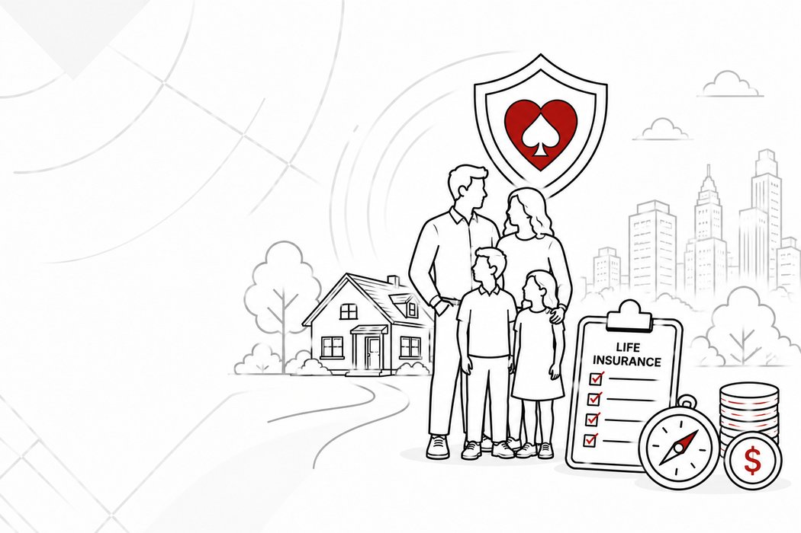

Term Life
Affordable coverage for 10, 20, or 30 years.
Example: Parents with young children choose a 20-year term policy to protect income replacement.

Review policy types we offer and filter by what matters most to your family.
Affordable coverage for 10, 20, or 30 years.
Example: Parents with young children choose a 20-year term policy to protect income replacement.
Lifetime coverage with guaranteed cash value growth.
Example: A client building legacy plans uses Whole Life for permanent protection and stable value growth.
Smaller policy amounts focused on final expenses.
Example: A retiree sets up coverage to avoid funeral costs being passed to family.
Coverage designed to help keep your home protected.
Example: Homeowners with a new mortgage use this to reduce payment risk after an unexpected loss.
Flexible permanent options with cash value potential.
Example: A high-income household uses IUL for lifetime coverage and supplemental retirement strategy.
Structured income options for retirement planning.
Example: A pre-retiree converts part of savings into predictable monthly income.
Potential option to sell an existing policy for cash.
Example: A policyholder evaluates settlement value when coverage needs have changed.
Preview potential underwriting outcomes before full application.
Example: A client with health concerns checks likely offers before submitting a full application.
Review current coverage, costs, and beneficiary setup.
Example: A family reviews an older policy and identifies stronger benefits with better value.